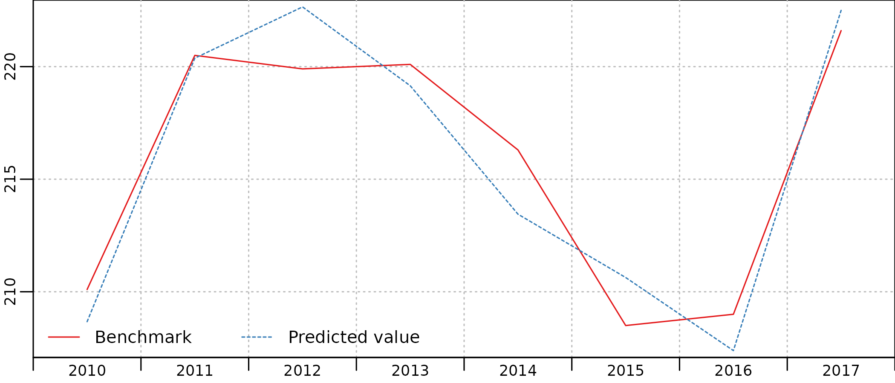
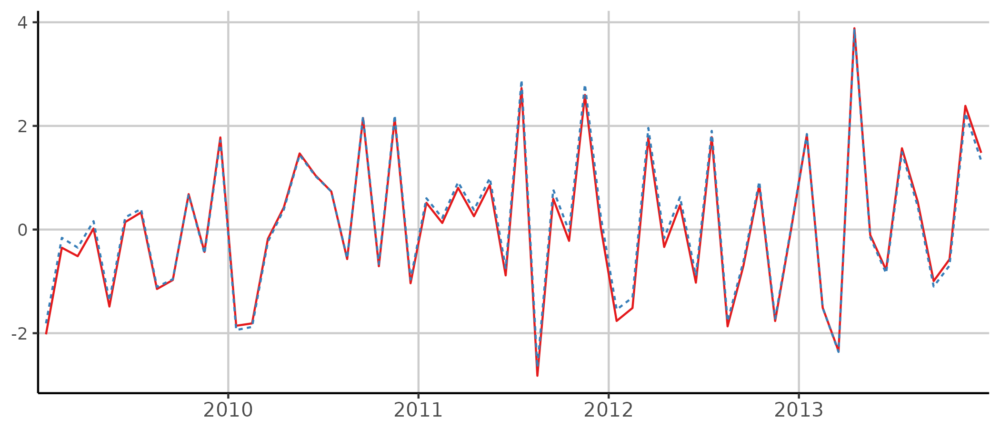

The French quarterly accounts are constructed using an indirect method, based on two major data series: the annual national accounts, and the short-term outlook data compiled from various sources. Hence, a temporal disaggregation methodology is needed.
disaggR isn’t the only package on the CRAN providing such methods. tempdisagg relies on a formula interface, supports most time series classes and provides compatibility with irregular disaggregation setting (e.g. months to days).
disaggR has different goals:
- implementing the french national accounts methodology on time-series
of the class
"ts" - providing a simple syntax that relies on standard evaluation and functions
- being fast enough to deal with the production of multiple series without linking to Rcpp (for readability purposes)
For further details about the french national accounts methodology, see Methodology of quarterly national accounts.
Within that vignette, for each matrix time series, like in R, rows stand for the time and columns for the different variables. As for the operations, stands for the standard product, for the element-wise multiplication, and for the element-wise division.
Two-Steps Benchmarks
twoStepsBenchmark(turnover,construction)The two-steps benchmarks, provided by
twoStepsBenchmark(), rely on this high-frequency
formula:
Where:
- , an univariate time series, is the high-frequency account.
-
,
a matrix time series, combines the columns of the indicators, the
outliers and the constant. If
include.differenciationisTRUE, the constant is actually a trend. - , a numeric vector, stands for the coefficients to be applied.
- , an univariate time series, is the smoothed part of the benchmark.
The coefficients are estimated at low-frequency,
within the coeff.calc window, eventually after a differentiation if
include.differenciation is TRUE:
If include.rho is TRUE,
is an AR1 process with an autocorrelation parameter, and
is estimated through a Prais-Winsten process. Otherwise, an ordinary
least squares process is used.
These coefficients are applied at high-frequency, to obtain the fitted values of the benchmark:
Note that, especially when include.differenciation is
TRUE, the level of the fitted values is arbitrary: a
constant is chosen to zero during the implicit reintegration.
The choice of this constant, however, doesn’t impact the benchmarked
series.
u is smoothed:
As the low-frequency values of have been set from the beginning, and the fitted values have just been computed, the aggregated values of are known. If these values aren’t defined all across the domain window, these are extrapolated as follow:
-
if
include.differenciationisTRUE -
if
include.differenciationisFALSE
The Boot, Feibes and Lisman process, through the
bflSmooth() function, is then used to get the
high-frequency values of u across the domain window.
Proportional Denton Benchmarks
threeRuleSmooth(turnover,construction)The Proportional Denton Benchmarks, provided by
threeRuleSmooth(), rely on this high-frequency formula:
Where:
- , an univariate time series, is the high-frequency account
- , an univariate time series, the indicator
- , an univariate time series, the coefficient to be applied, which is a rate to be smoothed.
Proportional Denton benchmarks share some similarities with univariate two-steps benchmarks without constants. There are some differences:
- The coefficient is not a constant.
- There is no smoothed part, as is already smoothed for to be equal to after aggregation.
In order to smooth the rate, a few steps are required.
An alternate version of I is computed, that is only used for the smoothing:
Only the full cycles of I are kept, then the first and last full cycles are replicated respectively backwards and forwards to fill the domain window.
The low-frequency rate is already known where is defined. This rate is then extrapolated to fill the domain window:
Such an extrapolation is a bit more problematic than the
natural extrapolations provided by
twoStepsBenchmark(). Indeed, the proportional Denton
benchmarks don’t involve any hypothesis on
,
other than continuity. As continuity isn’t enough, and that proportional
Denton benchmarks are mainly used for rates that have a trend, those
rates are extrapolated using an arithmetic sequence. By default, the
common difference of this sequence is given by the mean of the rate
differences within the delta rate window.
The high-frequency rate can then be computed with the help of a weighted Boot, Feibes and Lisman process:
Plots
disaggR provides some tools for plotting its results. Functions
in_sample(), in_disaggr(),
in_scatter(), in_revisions() generate objects
of class "tscomparison". Each object of class
"tscomparison", "twoStepsBenchmark" or
"threeRuleSmooth" can be plotted with either the base
plot() or the ggplot2 autoplot() method. These
methods all share similar arguments:
- x (or object for the autoplot method) a tscomparison, a twoStepsBenchmark or a threeRuleSmooth
- xlab, the title for the x axis
- ylab, the title for the y axis
- start, a numeric of length 1 or 2. The start of the plot
- end, a numeric of length 1 or 2. The end of the plot
- col, the color scale applied on the plot. Could be a vector of colors, or a function from n to a color vector of size n.
- lty, the linetype scales applied on the plot. Could be a vector of linetypes, or a function from n to a linetypes vector of size n.
-
show.legend,
TRUEorFALSE. Should an automatic legend be added to the plot. - main, a character of length 1, the title of the plot
- mar, a numeric of length 4, the margins of the plot specified in the form c(bottom, left, top, right).
- theme, a ggplot theme object to replace the default one (only for autoplot methods)
- …, other arguments passed either to ggplot or plot
benchmark <- twoStepsBenchmark(hfserie = turnover,
lfserie = construction,
include.differenciation = TRUE)
plot(in_sample(benchmark,type="levels"),
start=c(2010,1),end=c(2017,1))
library(ggplot2)
smooth <- threeRuleSmooth(hfserie = turnover,
lfserie = construction)
autoplot(in_disaggr(smooth),
start=c(2009,1),end=c(2013,12),
show.legend = FALSE)
Other methods
Various methods can be applied on objects of class
"twoStepsBenchmark" and/or
"threeRuleSmooth".
benchmark <- twoStepsBenchmark(turnover,construction)
smooth <- threeRuleSmooth(turnover,construction)
reView(benchmark)
rePort(benchmark)
as.ts(benchmark);as.ts(smooth)
as.list(benchmark);as.list(smooth)
coef(benchmark)
residuals(benchmark)
vcov(benchmark)
fitted(benchmark)
model.list(benchmark);model.list(smooth)
se(benchmark)
rho(benchmark)
outliers(benchmark)
smoothed.rate(smooth)
summary(benchmark)Additionally, most of the methods for time series, from the package
stats, automatically coerce these objects into time-series using
as.ts().